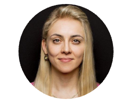

Aleksandra Kłoda

Summary
Proactive and analytical junior tester with a solid technical foundation gained from leading European universities. Holding an MSc in Management in Production and a BSc in Mechanics and Building Machines, I bring a diverse skill set and a strong grasp of technical and business concepts. My academic journey, including studies at DTU, sharpened my abilities in project management, strategy, and organizational methods. Driven by a passion for software testing, I successfully completed the Sourcery Academy by Cognizant, where I gained hands-on experience in Agile, Functional and Non-functional testing, Automation, Performance, Security, and Exploratory testing. I am skilled in testing foundation and SQL. With excellent English communication skills and a commitment to continuous learning, I thrive in collaborative environments and am eager to contribute to quality assurance efforts with optimism and
Precision.
Areas of expertise
- Primary Skills: Manual, Functional and Non- Functional Testing, Business Analysis
- Databases & Query Languages: SQL ( PostgreSQL)
- API Testing Tools: Postman, SwaggerUI, DevTools
Latest work experience
Cognizant - Test Engineer
2025-present
- Execution of Functional, Performance and Smoke Tests
- Creation of test cases, test packs, test execution reports
- Analyzing requirements and assessing risks
- Identifying testability and automation gaps
- Help in maintaining a timely test plan and strategy
- Participation in estimation and assistance in risk assessment
- Demo preparation and execution
- Communication with the Client
- Incidents analysis and impact analysis
- Facilitating Retrospective for the team
Cognizant - Intern
Sourcery Academy for Testers - 2024
Participated in testing of a project that involved:
- Applying Agile testing techniques in a collaborative environment
- Performing functional testing for web, mobile, and API-based applications
- Assisting in test automation and script maintenance
- Conducting security, accessibility, and performance testing
- Supporting various aspects of non-functional testing to ensure product quality and reliability
HILTI - Account Manager
2019-2020
- Monitor and analyze customer product usage data
- Finding new or customized solutions for customers
- Build Long-Term Customer Relationships
- Ensure timely and successful delivery of products and services
- Coordinating the event, driving collaboration and team involvement
HILTI - Financial Spercialist
2017-2019
- Improve existing processes for optimal financial outcomes
- Manage financial vindications effectively
Education
2010-2014 Technical University in Warsaw
Engineering Degree in Mechanics and Machines Building
2014-2016 DTU, Copenhagen(Erasmus) and Technical University in Warsaw
Masters Degree in Engineering Management
Certificates
Skills
- Manual Testing
- API Testing
- Business Analysis
Selected relevant project experience
Quality Assurance for Web Application in Finance
- Performed manual and automated testing for web, mobile, and API applications.
- Applied Agile testing techniques, collaborating closely with developers and product owners during sprints
- Contributed to regression, performance, accessibility, and security testing to improve product quality
- Documented test results and supported defect tracking and verification using industry-standard tools
Hobbies
My Hobby
Contact
Contact Me